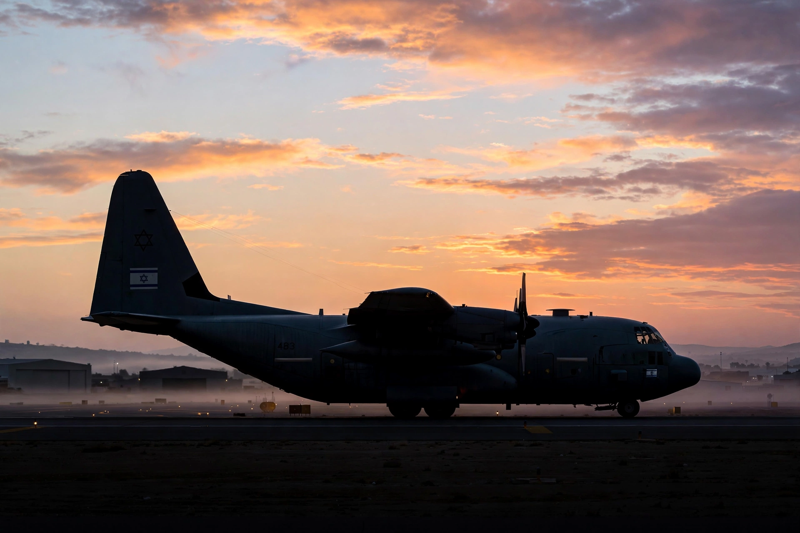

Operation Entebbe
From Wikipedia, the free encyclopedia

Operation Entebbe (codenamed Operation Thunderbolt) was a counter-terrorist hostage-rescue mission carried out by the Israel Defense Forces at Entebbe Airport in Uganda on 4 July 1976. After Palestinian and German hijackers diverted Air France Flight 139 to Idi Amin's Uganda and released non-Jewish passengers, Israeli commandos flew 4,000 km by night, stormed the terminal, and flew out 102 of 106 hostages; the assault force's commander, Yonatan Netanyahu (brother of Benjamin Netanyahu), was the only Israeli soldier killed.
The hijack and raid
The hijackers (from the PFLP-EO and Germany's Revolutionary Cells) demanded prisoner releases; Israel negotiated in public while planning in secret — using released hostages' testimony, the terminal's Israeli builders' plans and Mossad intelligence. Four C-130s, a disguised motorcade imitating Amin's, and 29 minutes on the ground sufficed; three hostages died in the crossfire and a fourth, Dora Bloch, was murdered afterwards in a Kampala hospital.
Aftermath
The raid became Israel's founding feat-of-arms legend (and a staple of films), humiliated Amin (who purged his own officials), enraged the OAU, and drew a UN debate in which even critics conceded the rescue's audacity. Entebbe airport's old terminal stands preserved as a monument, and 4 July 1976 remains the benchmark against which hostage rescues are measured.